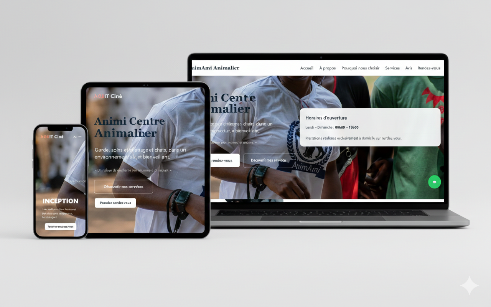
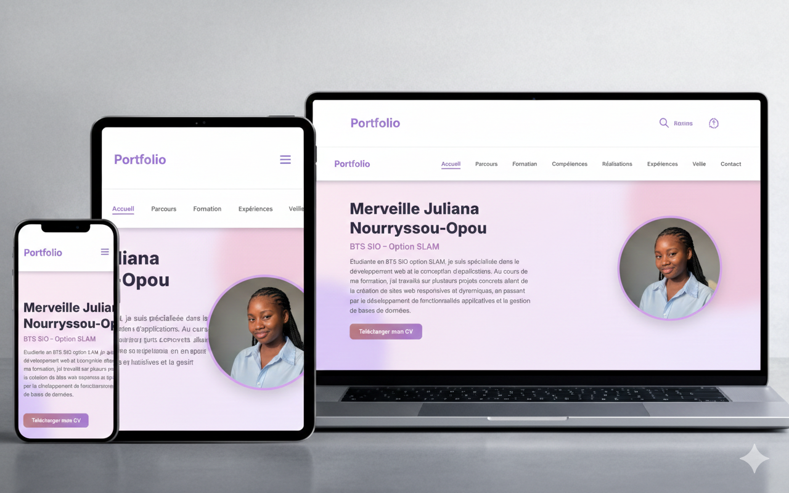

Parcours
BTS SIO — Option SLAM
SCHOLIA — 2024 - 2026Formation orientée développement web et logiciel : programmation, bases de données, conception d’applications et gestion de projets informatiques.
Baccalauréat Scientifique C
Lycée Imma-Ngankou — CONGO — 2022 - 2023Spécialité Mathématiques et Physique, renforçant la logique, le raisonnement et la résolution de problèmes.
Formation
BTS SIO — Option SISR
Solutions d’Infrastructure, Systèmes et Réseaux
L’option SISR forme aux métiers liés à l’administration des systèmes, des réseaux et de la cybersécurité. Elle prépare à gérer l’infrastructure informatique d’une organisation.
- Administration serveurs
- Gestion réseaux
- Sécurité informatique
- Virtualisation
BTS SIO — Option SLAM
Solutions Logicielles et Applications Métiers
L’option SLAM est orientée vers le développement d’applications web et logicielles. J’ai choisi cette spécialité car elle correspond à mon intérêt pour la programmation, la création d’interfaces interactives et le développement full-stack.
- Développement web & logiciel
- Base de données (SQL)
- Programmation orientée objet
- Conception d’applications métiers
Compétences
Compétences techniques
HTML
90%CSS
75%JavaScript
50%PHP
75%Python
35%Java
30%Tailwind
75%AOS
100%MySQL / SQL
90%UML
50%MERISE
50%VS Code
95%XAMPP
85%GitHub
75%Eclipse
60%Anaconda
60%Lucidchart
70%Analyse des besoins
Développement d'applications
Gestion de projet
Réalisations
Quelques exemples de projets réalisés en cours de formation et en projets personnels.

AnimAmi Centre Animalier
Décembre 2025 - Mars 2026
Durée : 1 mois
Développement complet du site web officiel d’AnimAmi Centre Animalier, une startup située au Congo proposant des services animaliers. Le site intègre une présentation dynamique des services, une base de données MySQL et des animations modernes.

Portfolio
Septembre 2025 - novembre 2025
Durée: 1 mois
Conception et développement de mon portfolio personnel afin de présenter mes compétences, expériences et réalisations professionnelles. Ce projet met en avant une interface moderne, responsive et animée, avec une attention particulière portée à l’ergonomie, au design et à la performance.

Site de AGS IT Ciné
Août 2025 - Decembre 2025
Durée: 2 mois
Développement autonome d’AGS IT Ciné, un site web dédié au cinéma proposant une interface moderne, interactive et entièrement responsive.

Business Privée — Cabinet de conseil
Juillet 2025 - Août 2025
Durée: 2 mois
Développement du site vitrine Business Privé afin de présenter efficacement ses services tout en assurant une mise en page moderne et entièrement responsive.
Site vitrine de pâtisserie — Bolingo ya sucre
Mai 2025
Durée: 1 mois
Site vitrine mettant en avant galeries et univers pâtissier avec un design doux et attractif.

Agence de Voyage
Avril 2025
Durée: 1 mois
Site web fictif présentant différentes destinations avec pages dédiées, galeries et navigation dynamique.
Expériences professionnelles
Stage — Développeuse Web Junior
AnimAmi Centre Animalier — Startup (Congo) — 1 moisConception et développement du site officiel d’AnimAmi Centre Animalier, une startup spécialisée dans les services animaliers au Congo. Réalisation complète du site avec une architecture claire, une interface moderne et un système dynamique connecté à une base de données.
- Développement front-end et back-end
- Création d’un système dynamique avec PHP & MySQL
- Interface responsive et animations fluides
- Intégration des services et contenus administrables
Stage — Développeuse Web Junior
AGS IT — Développement & services IT — 2 moisDéveloppement en autonomie du site fictif « AGS IT Ciné » pour l’entreprise AGS IT, un site de cinéma conçu pour présenter des films, pages dédiées et contenus dynamiques. Projet réalisé intégralement avec une approche soignée du design et de l’ergonomie.
- Développement complet du site
- Interface moderne + responsive
- Animations et interactions JavaScript
Stage — Développeuse Web Junior
Business Privée — Cabinet de conseil — 1 moisRéalisation en équipe d’un site vitrine one-page pour l’entreprise Business Privée. J’ai principalement pris en charge la partie développement et l’intégration du site, en veillant à la mise en forme et au rendu responsive.
- Intégration HTML / CSS
- Ajustements graphiques
- Adaptation responsive
Veille Technologique
Qu’est-ce que la veille technologique ?
La veille technologique consiste à suivre régulièrement les nouveautés, tendances et évolutions d’un domaine informatique. Elle permet de comprendre les changements importants et d’adapter ses compétences en conséquence.
Mon sujet de veille
Ma veille porte sur les technologies liées au Cloud et aux pratiques DevOps. J’observe notamment les évolutions concernant l’orchestration, l’automatisation, la sécurité et la gestion d’infrastructure via des outils comme Docker, Kubernetes, GitHub Actions, AWS, Azure et Terraform.
Sources utilisées
Méthode employée
Je consulte régulièrement des sources officielles et fiables. Je sélectionne les informations pertinentes puis je les synthétise sous forme de fiches afin d’en garder une trace claire et exploitable.
Fiches de veille
Sécurité post-quantique pour l’accès SSH
GitHub Blog — 15 septembre 2025Résumé : GitHub adopte des méthodes d’échange de clés post-quantiques pour renforcer la sécurité SSH face à l’arrivée des ordinateurs quantiques.
Intérêt BTS : DevSecOps, sécurité SSH, cryptographie.
Apport professionnel : Comprendre les futures normes de sécurité et sécuriser des environnements Git.
IssueOps : Automatiser CI/CD via GitHub Actions
GitHub Blog — 19 mars 2025Résumé : IssueOps permet de déclencher des workflows CI/CD via des issues GitHub.
Intérêt BTS : DevOps, CI/CD, automatisation.
Apport professionnel : Comprendre GitHub Actions et automatiser des pipelines.
Docker Engine v29 : Mise à jour majeure
Docker Blog — 11 novembre 2025Résumé : Nouvelle version de Docker avec améliorations en performance, sécurité et gestion des containers.
Intérêt BTS : Comprendre les environnements conteneurisés.
Apport professionnel : Utiliser des versions récentes et sécurisées.
Faille CVE-2025-12735 dans Docker Hardened Images
Docker Blog — 26 novembre 2025Résumé : Correction rapide d’une faille critique affectant Kibana.
Intérêt BTS : Sécurité et surveillance des CVE.
Apport professionnel : Comprendre supply chain logicielle.
Kubernetes v1.30 — Nouveautés
Kubernetes Blog — 17 avril 2024Résumé : Nouvelles API stables, meilleure gestion de ressources et sécurité renforcée.
Intérêt BTS : Comprendre l’orchestration de conteneurs.
Apport professionnel : Suivre l’évolution des versions K8s.
Amazon EKS — Nouveautés workloads
AWS Blog — 30 novembre 2025Résumé : Amélioration de l'orchestration, sécurité et automatisation.
Intérêt BTS : Relie Kubernetes + cloud.
Apport professionnel : Comprendre le Kubernetes managé.
Azure Ultra Disk — Nouvelle génération
Azure Blog — 6 novembre 2025Résumé : Stockage ultra-performant pour applications critiques.
Intérêt BTS : Infrastructure cloud.
Apport professionnel : Dimensionner des architectures cloud.
Terraform — Sécuriser l’infrastructure
HashiCorp Blog — 20 novembre 2025Résumé : Terraform renforce la sécurité grâce à l'IaC et au contrôle d’accès.
Intérêt BTS : Infrastructure as Code.
Apport professionnel : Automatiser des infrastructures cloud.
Contact
Me contacter
- merveillenourryssou@outlook.fr
- github.com/merveillejul
- linkedin.com/in/merveille-nourryssou
- Basée en France — Disponible en présentiel ou à distance